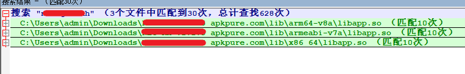
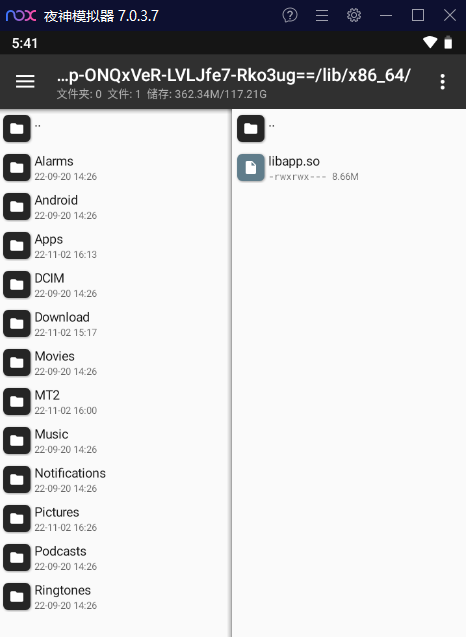
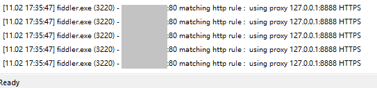
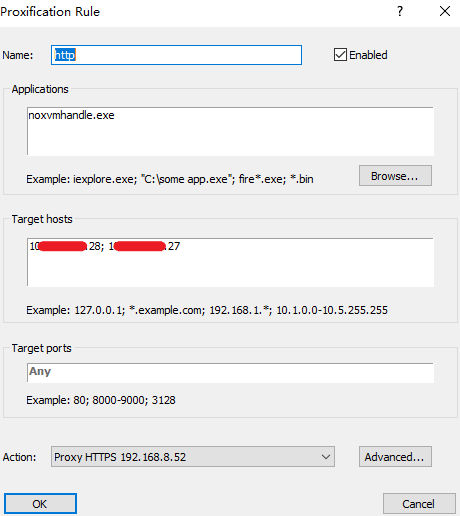
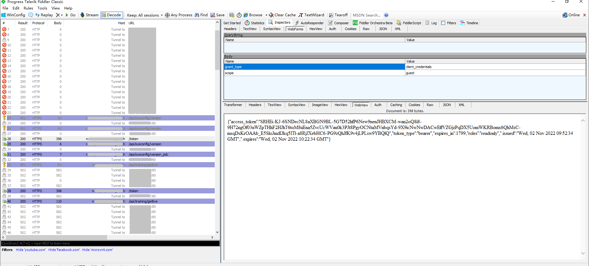
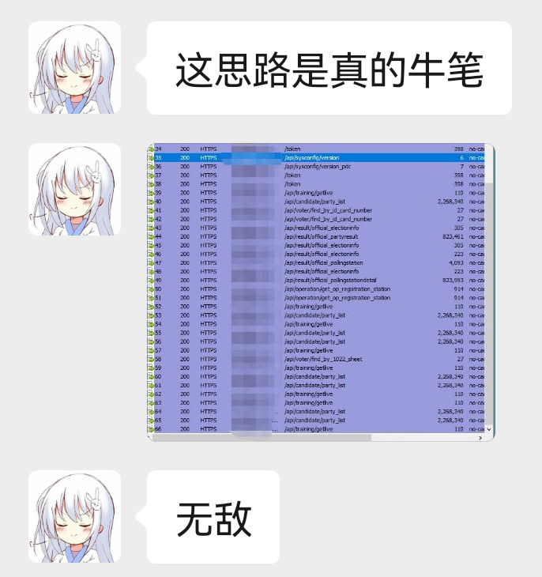

¶0x01 前言
很多 apk 设置代理后，抓包都会出现没有包的情况，一部分原因就是使用 so 文件 https
经过大佬的一通研究后，用了意想不到的解决方案突破了该问题，高，实在是高，学习并记录
¶0x02 解决方案
正常抓包，模拟器配置好代理和 fiddler ，我这用的夜神，magisk+LSP+justTrustme 后开始按照正常流程抓包，可见无任何流量
¶1. 查找域名
winrar 解包 apk ，使用 npp 搜索相关域名，搜出3处 so 文件，在其中搜索 https 包含大量请求

¶2. 替换https
使用如下 py 代码替换 https 为 http，替换上述3个文件
1 | import re |
¶3. 替换so文件
将更改的so文件替换到app对应系统目录下，如果有就替换，没有就直接放入
/data/app/[app 名]/

¶4. 抓包
打开app，查看proxifier走向可看到ip走向已从443变为80，证明so文件加载成功

proxifier添加http规则，使该ip代理到fiddler

¶5. 替换http
ctrl+r打开 fiddler 脚本，在OnBeforeRequest函数内添加如下代码，即为把http请求更改为https
1 | // https2http |
fiddler即可正常抓包

¶0x03 总结
该方案将https替换成http，没了证书自然抓得到包，最后再通过fiddler替换回去，实现app的正常运行，属于奇技淫巧了
只要功夫深，铁杵磨成针，大佬yyds
最后贴一个大佬被自己思路折服的画面，无敌！🙌
